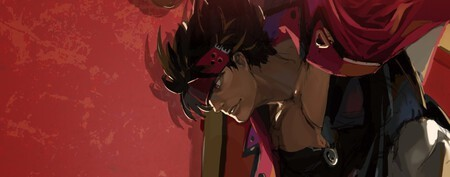
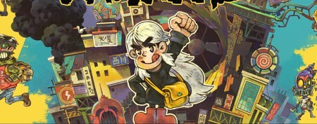
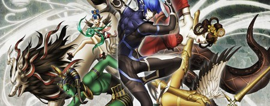

Guilty Gear Strive es mucho más que el mejor juego de lucha de 2021: supone el cénit de toda saga. Y lo mejor es cómo corona sus magistrales sensaciones a los mandos con un online intachable gracias al Rollback Network, logrando que cada combo bien ejecutado sea puro rock 'n' roll, independientemente de que la partida sea a distancia, a dos mandos o en el clásico modo Arcade.
Como dijo Juan en nuestro análisis, Eastward es bello hasta decir basta. Ahora bien, su exquisito pixel art es solo la punta del iceberg: el juego de Pixpil emana un mimo por sus personajes, un cariño muy especial en todos sus apartados y reparte ambos aspectos muy generosamente en una historia que atrapa a base de dejar siempre un hilo del que tirar. Todo un caramelito.
Argumentalmente, Shin Megami Tensei V es un épico viaje a un inframundo arrasado por la guerra; en la práctica estamos ante una cita obligada en Switch para todos los apasionados por los RPGs de corte Made in Japan. Porque Atlus se tomó su tiempo en darle forma a la muy esperada quinta entrega de su saga de culto, desde luego, pero el resultado alcanzó unas expectativas que estaban por las nubes. Y eso ya es un hito.



Informacion del juego
Informacion del juego
Informacion del juego
Metroid Dread
Marvel's Guardians of the Galaxy
Deathloop
Después del espléndido trabajo realizado con Metroid: Samus Returns, MercurySteam ha vuelto a ponerse al frente de la saga con Metroid Dread, el que sin duda es el mejor videojuego que se ha desarrollado este año para Nintendo Switch. Una de esas espectaculares aventuras de acción en 2D que, a pesar de presentar un tremendo desafío, te atrapa de principio a fin.
Después de ver cómo Marvel's Avengers se nos quedaba a medio gas, es normal que fuéramos con pies de plomo ante la llegada de un supuesto nuevo gran juego de superhéroes. Por suerte para todos, resultó que Marvel's Guardians of the Galaxy sí era una joya. Directo a nuestro top 10 del año, como podéis ver.
En cambio Deathloop, el último trabajo de Arkane hasta la fecha, sí lo vimos venir. Después de habernos hecho disfrutar tanto con los Dishonored como con Prey, el estudio se metió de lleno en el sugerente terreno de los bucles temporales y se sacó de la manga un juegazo como la copa de un pino.